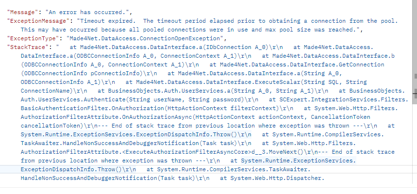

Server Disconnection – SQL Connection Pool Exhaustion (Habers Case)
Overview
During Go-Live at Habers (HBDB-PROD / HBWMS-PROD), users experienced repeated server disconnections while importing SKU master data via API. The issue was identified as SQL Server connection pool exhaustion.
Environment Details
- Client: Habers
- Environment: Production
- SCExpert Version: 4.12.1.8
- Integration Type: Web API SKU import
- Error Type: SQL Connection Pool Timeout
Error Message
{
"Message": "An error has occurred.",
"ExceptionMessage": "Timeout expired. The timeout period elapsed prior to obtaining a connection from the pool. This may have occurred because all pooled connections were in use and max pool size was reached.",
"ExceptionType": "Made4Net.DataAccess.ConnectionOpenException"
}
Server disconnection
Timeout error on Postman

Add a new param called "SqlMaxPoolSize" in web config file
<add key="SqlMaxPoolSize" value="500"/>
And then restart IIS
Permanent Solution
Upgrade SCExpert to version 4.12.1.11 or higher.